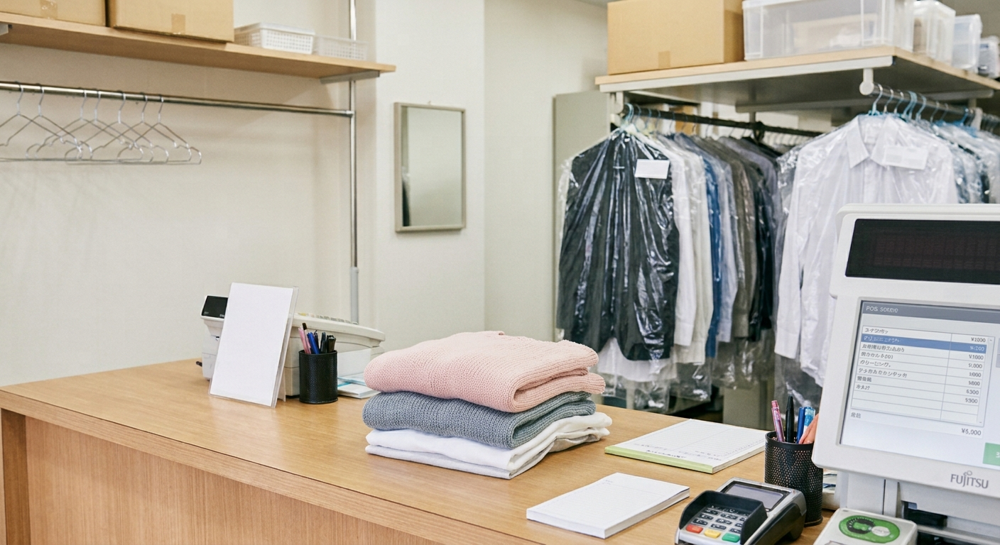
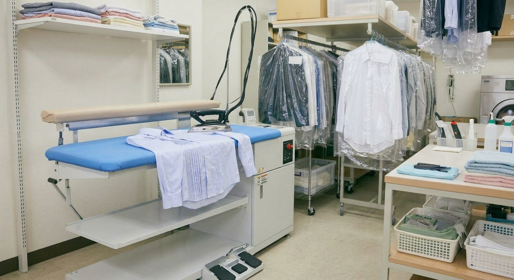

国家資格を持つクリーニング師4名が、染み抜きから仕上げまで丁寧に手がけます。
洗浄、シミ抜き、補色、修理の技術を組み合わせ、一点ごとの状態に合わせて対応します。
楽天市場の月間優良ショップを22回受賞。テレビ・新聞・雑誌・WEBなど、70件以上のメディアに取り上げられています。

1969年、札幌市白石区で初代が始めた店を、現在は三代目が受け継いでいます。
昔ながらの技術を大切にしながら、全国宅配やLINEでの写真相談など、新しい仕組みも取り入れてきました。「きれいにして、これからも大切に使いたい」というお客様の想いに応え続けることが、私たちの仕事です。
衣類から、ご家庭では洗いにくい品物まで。「イチカワさんなら」と頼っていただく中で、取扱いが広がってきました。
料金は公式サイトの料金表をご確認ください。

息子が大事にしていたぬいぐるみのクリーニングと綿詰め替えをお願いしました！とっても綺麗にして見違えるようにパンパンになって息子も喜んでました！ぬいぐるみのメンテナンスで色々探してましたが、シンプルな料金体系で依頼しやすかったです。ありがとうございました。
長年大切にしてきたぬいぐるみのクリーニングと綿入れ替えをお願いしました。出来上がりがきれいなのはもちろんのこと、対応もスムーズ且つ丁寧でした。全て含めて大満足です！本当にありがとうございました！次もまたイチカワクリーニングさんにお願いしたいです(^^)
お客様目線での、ひとつの提案です。